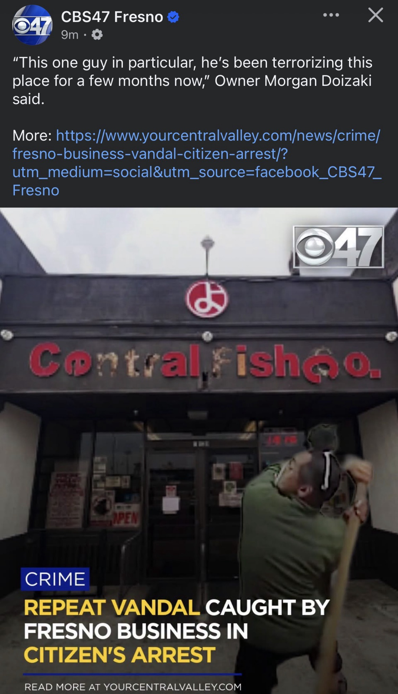

CBS47 put the clip on Facebook tonight. Owner Morgan Doizaki said the quiet part out loud.
"This one guy in particular, he's been terrorizing this place for a few months now. We finally saw him, and we did a citizen's arrest, and cops came and took him away."
That is the whole case in three sentences. A known face. Months of return visits. Then a shop that stopped filing and started holding.
What Thursday looked like
Video from Thursday shows a man using a pole to knock letters off the red sign over the doors. Another clip from the same day shows glass going on one of the entries. The broadcast graphic reads the way the district already knows these stories read: repeat vandal, caught by the business, citizen's arrest.
Before the pole and the glass he had already been inside more than once. Grabbing product. Throwing it. The kind of visit that does not make the evening news until the sign itself is missing vowels.

This shop has already buried worse
Central Fish is not a chain and it is not new. Akira Yokomi opened it in 1950 after internment and Army service. He built a fish house that sold to everybody in the west side, not only the Japanese families who first walked in. By 1979 it was market, grocery, and counter. In 1996 a former employee and a 14-year-old accomplice stabbed Yokomi to death at the desk after hours. He was 75. Twelve hundred people came to the Buddhist Temple. Fresno named a school after him.
Morgan Doizaki, the great-nephew, left Los Angeles in 2003, finished school at Fresno Pacific, and put the place back on its feet. The last building of any size that Chinatown got in that era was this one. The letters on the fascia are not decoration. They are the name that survived a murder, an absentee decade, and every planning map that treated Kern Street as leftover land.
A man with a pole does not get to edit that sign for months without an answer.
Citizen arrest is not a hobby
California lets a private person arrest when a public offense is committed in their presence, or when a felony has in fact been committed and there is reasonable cause. That is the statute. It is also the last tool a shop uses after the same person has already come back.
Doizaki did not call it brave. He called it finally. They saw him. They held him. Police took him. The news did not name the suspect. That is fine. The pattern is the story. Months. Same guy. Product on the floor. Then letters in the gutter.
High Tower District crime watch exists because this is the ordinary temperature now. A 75-year shop should not have to run its own intake. Until the intake works, the shop that is still standing will do what the shop that is still standing has always done.